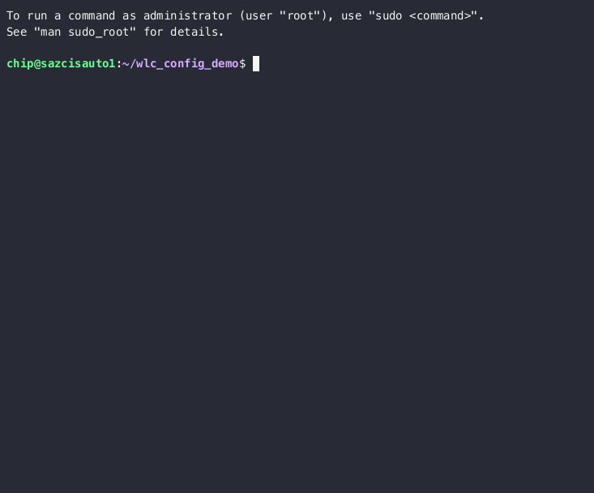

Ansible Config Push
Now that we've built our inventory and proved we can connect to the device with our credentials lets actually do some automation tasks. In this demo we'll take the templates shown previously, fill them with some data, and push the config to our device.
Ansible Vars
Ansible uses variables (or vars for short) for all kinds of uses including task and playbook selection along with filling in data for templates. These vars can some from many places. A var can be defined in multiple places and this provides a rich ability to override depending on where it is placed. Perhaps you want to set a default value but for certain types of device override that default with something more appropriate. For a full description of the process have a look at Ansible Variable Precedence.
Our Template Vars
When using ansible playbooks to deploy configuration, our automation goal is re-usability. We've written a playbook and a role to push our intended configuration to the device. However, we have not yet defined any vars to fill out our template. Since each time we deploy a wireless lan we will likely have unique values.
We could have a set of vars files that defines every single one of our wireless lan configs. The workflow would then be to edit this config file, add the new wireless lan, commit the files to git, and then have a git pipeline to do the actual deployment. However, that is beyond the scope of this demo.
For our purposes, each user will have a specific wireless lan to deploy.
Let's create a file for our wireless lan and put in all the vars needed.
Create and edit data.yml file and fill in the following (filling in the information provided for your pod):
---
wlan_name: SJCRH-Pod1
wlan_id: 100
wlan_ssid: SJCRH-Pod1
wlan_password: THE_POD1_PASSWORD

Now when we run ansible we can reference this file of vars and it will be used in our playbook and template to push the config to the device. Let's do that now.
Config Push Playbook
First lets take a look at our playbook.
(venv) chip@sazcisauto1:~/wlc_config_demo$ cat playbooks/configure.yml
---
- name: Configure WLC
hosts: wlc
become: true
roles:
- wlc_config
This playbook doesn't really have any 'tasks'. It only calls a role: 'wlc_config'. Since we don't really need to do anything other than push the config at the moment.
Let's take a look at the role.
(venv) chip@sazcisauto1:~/wlc_config_demo$ cat roles/wlc_config/tasks/main.yml
- name: Verify config_action
ansible.builtin.fail:
msg: "The variable 'config_action' must be one of 'remove' or 'add', current: '{{ config_action }}'"
when: "config_action not in ['add', 'remove']"
- name: Show Play Information
debug:
msg: "Connecting to '{{ inventory_hostname }}' as '{{ ansible_user }}' and performing '{{ config_action }}' config."
- name: Configure WLC
cisco.ios.ios_config:
src: templates/wlc_config.j2
diff_against: running
diff: true
Our role contains three tasks, let's walk through them.
The first task checks to make sure we're either going to 'add' or 'remove' config. If our 'config_action' is anything other than 'add' or 'remove' it will raise an error and abort.
The second task is outputting some info about our play. Indicating what device we're connecting to "inventory_hostname" , which in our case is the 'n-z2wicon6.stjude.org' host. Then showing us exactly what user we're connecting as and then finally what 'config_action' we are performing. Again, this task doesn't really do anything but is there to help the user understand what's happening.
Finally we get to the third task. This one will connect to the host via ssh, login using the username we specified earlier, render the template of config with our vars, and then put that config onto the device. Finally it will show us the config that was added or removed. All this is done with just those few lines.
Running the play
Let's now actually run the play which will call the role and do our config
ansible-playbook playbooks/configure.yml -e @data.yml -k
It will prompt you for your password. Enter your 'admin' password and it should take care of the rest.
NOTE: It may take a minute or so to complete.
Take a look at the output from the last play. You'll notice that some lines have a + in front of them. Those are the
bits config we just pushed!
Congrats!
Performing some checks
Previously, when speaking about writing our own tool to push config there was mention of checking the CPU on the device prior to attempting to make a change. Let's integrate that into our automation now.
Take a look at the playbooks/pre_change.yml playbook:
(venv) chip@sazcisauto1:~/wlc_config_demo$ cat playbooks/pre_change.yml
---
- name: Pre-Change Tasks
hosts: wlc
become: true
tasks:
- name: Get CPU stats
cisco.ios.ios_command:
commands:
- show processes cpu | include ^CPU utilization
register: show_proc_cpu
- name: Check CPU usage is sane
# "CPU utilization for five seconds: 1%/0%; one minute: 0%; five minutes: 0%"
ansible.builtin.fail:
msg: "CPU is too high for five minutes: {{ show_proc_cpu.stdout_lines[0][0] | regex_findall('five minutes: (\\d+)%') | int }}"
when: "show_proc_cpu.stdout_lines[0][0] | regex_findall('five minutes: (\\d+)%') | int > 60"
- name: Backup Config
cisco.ios.ios_config:
backup: yes
backup_options:
dir_path: "{{ playbook_dir }}/../config-backups/"
Here we have 3 tasks. The idea is we want to run this BEFORE making any changes to our device. This is a standard set of tasks everyone should do before we actually try and make a change on any device.
The first thing done is to run a command to get the cpu utilization of the device. The second task checks the output of that and makes sure the value is sane. That is, checking to see if utilization is below 60%. If it is greater than 60%, raise an error and abort. The third and final task is to make a backup of the config and save it locally, just in case something goes wrong and break.
Let's run this playbook now:
`ansible-playbook playbooks/pre_change.yml -k'
Once again, enter your 'admin' password at the prompt.
Ansible will now go and perform the tasks. When completed you can feel confident about making any further changes.
If you'd like, run the playbook again but this time increase the verbosity of ansible to display more data about what its doing.
ansible-playbook playbooks/pre_change.yml -k -v
Now take a look into the config-backups/ directory. You should see one or more copies of the running config from the
WLC, each with the name of the host and a time and date stamp added.
ls -la config-backups/